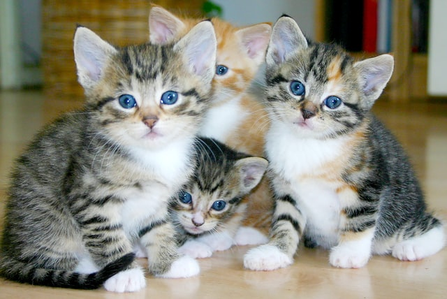

안녕하세요? 곡물남매를 소개합니다. 곡물 남매는 참깨와 들깨, 그리고 찹쌀이가 있습니다. 
곡물 남매 중 참깨와 들깨는 고작 1살밖에 되지 않았던 어미가 7마리의 새끼들에게 젖을 다 물리기가 힘들어서 말라서 죽어가자 저희 친정 식구들이 집으로 임시 보호를 시작한 아깽이들입니다. 다행히 새끼 두마리 격리를 통해 어미 고양이도 건강을 되찾았고, 참깨와 들깨도 친정집에서 사랑 받으며 지내게 되었습니다